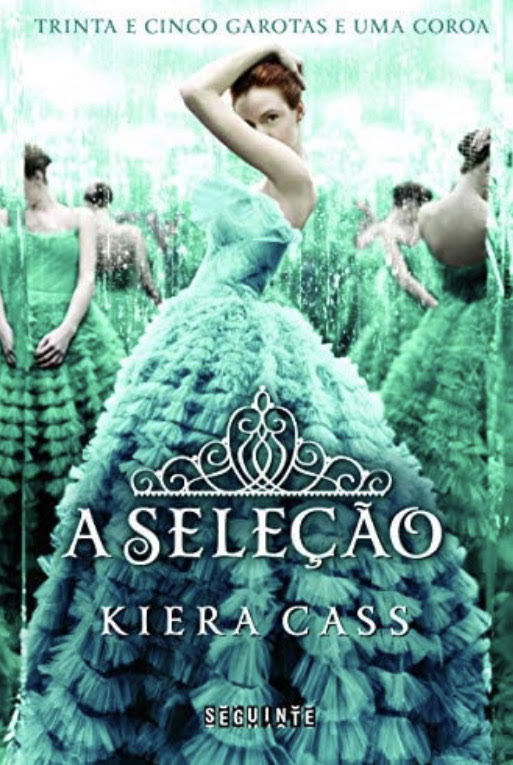

✨ Meu nome é Beatriz Abrahão, tenho 16 anos, nasci em São Paulo capital e contino morando aqui mesmo, moro com minha mãe e meu irmão, tenho uma cachorrinha chamada mel🐾. Desde pequena fui apaixonada em dançar, mas atualmente somente hip hop. Sempre fui uma criança muito criativa e extrovertida, por conta disso sempre fiz parte do teatro🎭 e até hoje amo esse lado expressivo da arte.

📚 Sempre gostei de ler, mas peguei gosto na leitura a um ano atrás, virou meu conforto um tempo pra mim mesma, me desligar do mundo real e entrar realmente na história é uma das melhores coisas pra mim. Meu gênero favorito é romance, fantasia e suspense, já muitos livros de diversos estilos, mas sempre focados nos meus três gêneros favoritos. Esses são um dos meus livros favoritos:
 >
>📘estilhaça-me é uma série de livro sobre uma garota chamda Juliette, que nasceu com um poder, o qual é muito perigoso, já que quando escosta nas pessoas elas podem falecer, por conta disso ela é exilada, mas depois de um certo tempo ela é tirada de lá para ser usada como arma. O mundo naquele momento foi divido por Comandantes para cada continente, a terra passava por uma escassez de alimentos e a natureza estava quase totalmente desvatada.
📗A seleção é uma trilogia sobre uma garota chamada américa, ela vive em um reino que e divido por castas, ela fazendo parte da casta de musicos, não tendo muito valor, com isso passando nessessidades, até que um dia chega o grande esperado a seleção, o qual é sorteado trinta e cinco meninas para irem ao castelo e o príncipe conhece-las e no final escolher uma para se casar, America não queria ir já que ela tinha seu namorado, porém ela é sorteada e seu namorado diz para ela ir, com tanta reluntancia ela vai, mas ela coloca na sua cabeça que só vai pela comida, mal sabia ela que o príncipe a conheceria antes do que o planejado.
📕A perdida é uma série que fala sobre uma garorota chamada Sofia, ela é totalmente conectada na internet, em seu aniverssário ela vai a uma festa com sua amiga e quando vai ao banheiro seu celular cai no vaso sanitário, no dia seguinte ela vai comprar um celular novo, a mulher que a atende é meio estranha, mas ela mesmo assim compra o celulcar, quando ela liga o celular um clarão surge e quando ela percebe está em um lugar que parecia desconhecido, um homem a encontra e ela estranha suas vestes por parecerem de 1800, mas Sofia não imaginária que ela realmente está em 1800 e irá conhecer sua alma gêmea.
🎥Se não estou lendo estou assistindo, já assiste um pouco de tudo, meus gêneros favoritos é cómedia, romance, suspense e ação, nunca gostei de terror, apesar de muita gente amar. meus filmes favoritos são grease, truque de mestre, raising the bar, nerve, DUFF, Gente Grande, O código Da Vinci e Mamamia. Minhas séries favoritas são Dinastia, Brooklyn nine-nine,Teen Wolf, Gossip Girl, The good place, The umbrella Acadamy, entre outras. meus animes favoritos são Sword art Online, tenku Shinpan, Dan Manchi, AICO entre outros.
🎬Tirando os programas, tenho muitos artistas que admiro como Elizabeth Gillies, Timothée Chalament, Kristen Bell, Daniel Sharman, Matthew Daddario, Zendaya e Adam Sandler
🎧Toda hora estou escutando música, não consigo viver sem escutar algo um dia, minha vida resume a músicas, tenho para cada momento do dia e humor.
minhas músicas favoritas atualmente são "afraid-the neighbourhood", "Swin-Chase Atlatic", "i hope ur miserable ultil ur dead- Nessa Barrett", "@ my worst-Blackbear", "Dandelions-Ruth B." e "happier than ever-Billie Eilish".
🎤Meus cantores favoritos são Sabrina Carpenter, Brun Mars, Harry Styles, Nessa Barrett, Shawn Mendes e Minhas bandas favoritas são Chase Atlantic e The vamps.
✈ Eu amo viajar, sempre gostei de conhecer lugares novos, culturas diferentes, comidas que não como no dia á dia. Pra mim viajar não é só relaxar da rotina, mas também ter mais conhecimento do mundo, aprender coisas diferentes assim adquirindo aprendizados para vida. Já viajei para vários lugares, mas tenho cinco luagres que ainda quero muito conhecer.
📍1- Canadá
📍2- Japão
📍3- Itália
📍4- África do Sul
📍5- Suiça